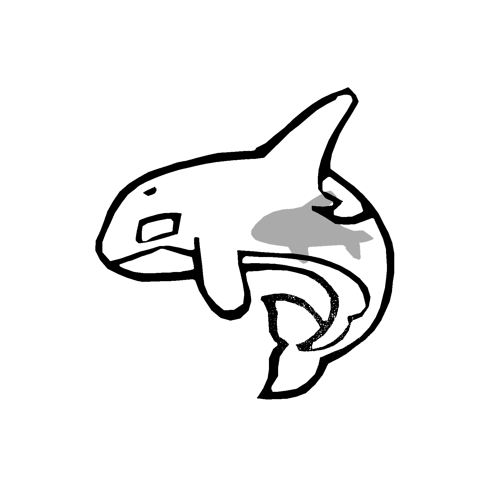
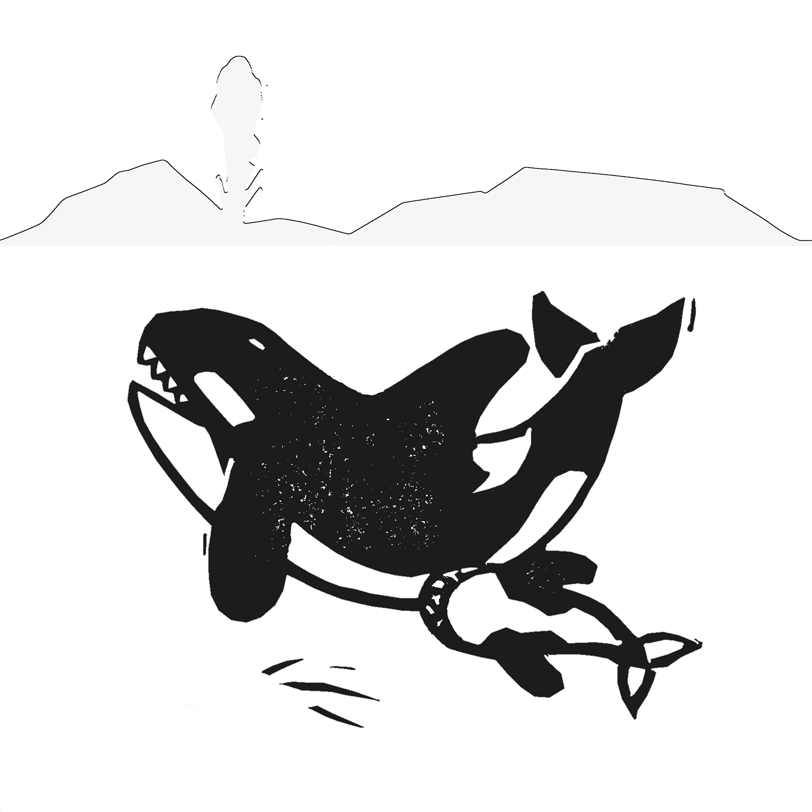
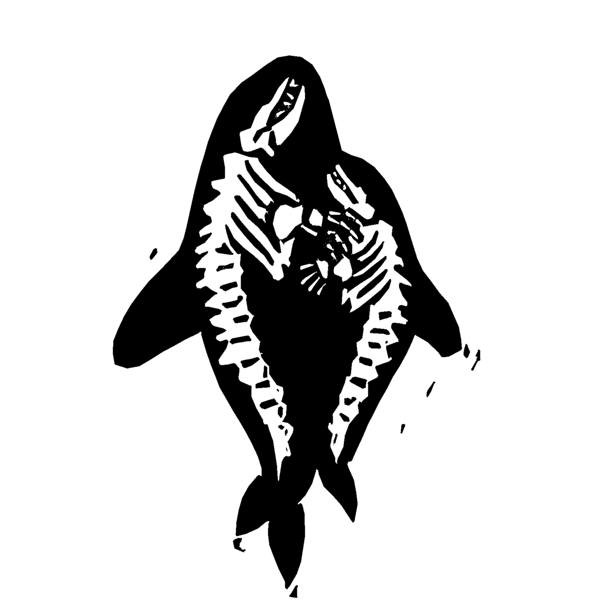
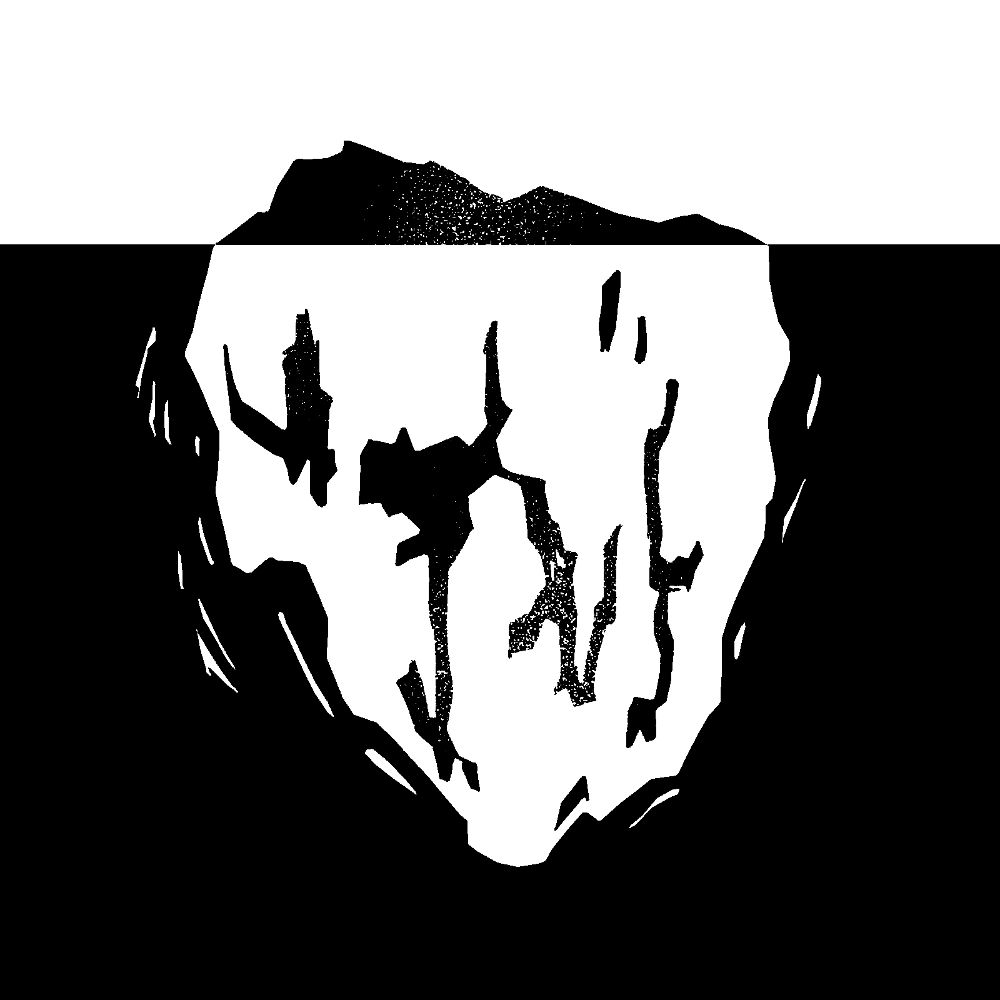
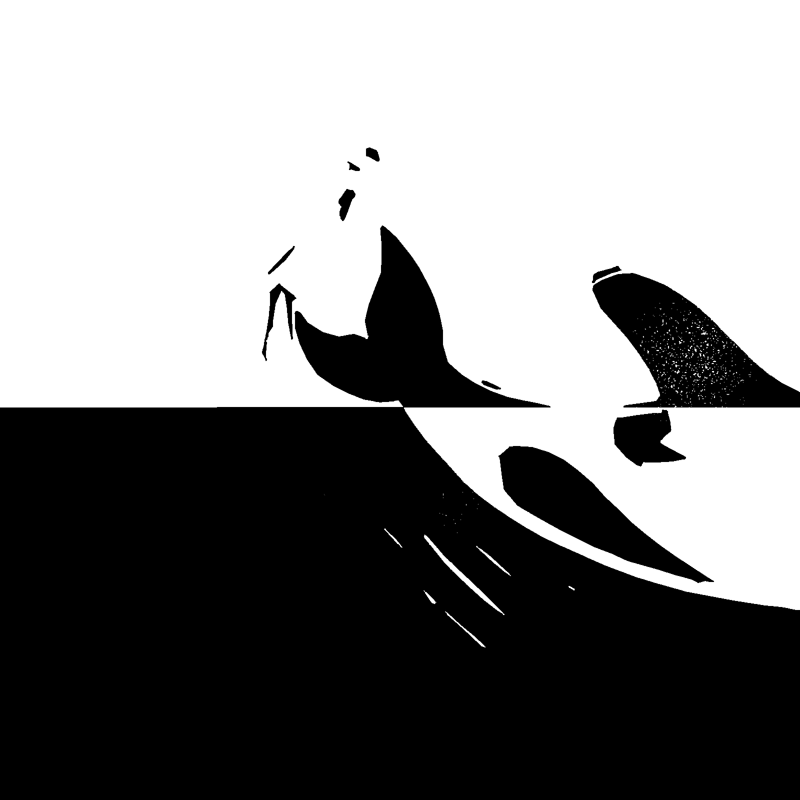
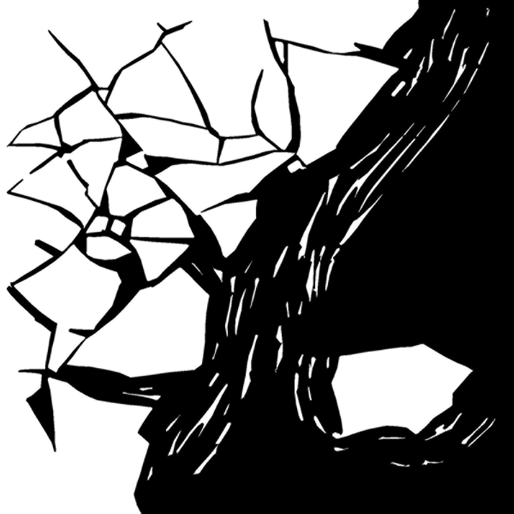

Conceptual made-up Björk album featuring the singles Mouth Cradle, I See Who You Are, and My Juvenile, inspired by the story of orca J35 and her calf. The project explores a deeply poetic visual narrative, blending symbolism, emotion, and conceptual imagery to evoke themes of motherhood, loss, and connection with nature.





